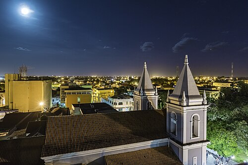

Parnaíba (PI) é considerada um destino belíssimo. Conhecida como a "Capital do Delta", a cidade mistura construções históricas, dunas, mangues e praias. Ela é uma parada estratégica e deslumbrante na famosa Rota das Emoções
